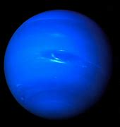

Neptun – gazowy olbrzym, ósma, najdalsza od Słońca planeta w Układzie Słonecznym, czwarta pod względem średnicy i trzecia pod względem masy. Neptun jest ponad 17 razy masywniejszy od Ziemi i trochę masywniejszy od swojego bliźniaka, Urana, który ma masę prawie 15 razy większą od masy Ziemi. Krąży wokół Słońca w odległości około 30 razy większej niż dystans Ziemia-Słońce. Nazwa pochodzi od rzymskiego boga mórz Neptuna. Odkryty 23 września 1846 Neptun jest jedyną planetą Układu Słonecznego, której istnienie wykazano nie na podstawie obserwacji nieba, ale na drodze obliczeń matematycznych. Niespodziewane zmiany w ruchu orbitalnym Urana doprowadziły astronomów do wniosku, że podlega on perturbacjom pochodzącym od nieznanej planety. Neptun został następnie zaobserwowany przez Johanna Galla w miejscu przewidzianym przez Urbaina Le Verriera, a wkrótce został też odkryty jego największy księżyc, Tryton; żaden z pozostałych 13 znanych dziś księżyców Neptuna nie został odkryty za pomocą teleskopu aż do XX wieku. Neptun został odwiedzony przez tylko jedną sondę kosmiczną, Voyager 2, która przeleciała w pobliżu planety 25 sierpnia 1989.